The SIMEXP team

Pierre Bellec, PhD, is the principal investigator of the SIMEXP lab. He is the director of Unité de neuroimagerie fonctionnelle, Centre de recherche de l’institut de gériatrie de Montréal and an associate professor at the Psychology department at Université de Montréal. He is also co-leading the "discovering new biomarkers" team of the Canadian Consortium on Neurodegeneration in aging, together with Dr Roger Dixon, from University of Alberta. Finally, Dr Bellec is the scientific director of the Courtois Project on Neuronal Modelling (NeuroMod), which uses human neuroimaging data to help train large artificial neural networks on a varity of cognitive tasks. Dr Bellec is a fellow ("chercheur boursier 1&2") of the "Fonds de Recherche du Québec - Santé".
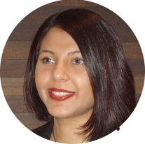
AmanPreet Badhwar, PhD, completed her doctorate at McGill University, where she integrated brain imaging, mass spectrometry-based quantitative proteomics and in vivo measures of neurovascular coupling to study the interaction of neuronal and neurovascular damage in Alzheimer’s disease models, and the impact of therapeutics on these two components. In 2014, she was awarded the Canadian Institutes of Health Research Age+ Prize, which recognizes excellence in research on aging, for her work. Currently, a postdoctoral fellow at the IUGM, University of Montreal, under the supervision of Dr. Pierre Bellec, Dr. Badhwar primarily uses fMRI data to study Alzheimer’s disease and to determine how aspects of brain connectivity could be developed as biomarkers of progression in Alzheimer’s disease. Dr Badhwar was the recipient of a post-doctoral fellowship from the Alzheimer's Society of Canada (2015-2017), and a CIHR post-doctoral fellow since 2017. Dr. Badhwar is also involved in public outreach through her artistic works where the topics of brain organization, plasticity, and memory are recurrent. In 2014, she was a winner in the HBM/Neuro Bureau Brain-Art Competition.
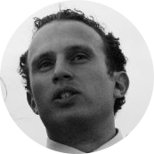
Yassine Benhajali graduated from Université de Montréal with a B.Sc. in Anthropology. He started a Master/PhD program in neuroanthropology at université de Montréal in 2010. His main research interest is at the nexus of nature and nurture of human cognition. His PhD work, entitled “Cultural Diversity and Biological Unity in Human Brain Networks”, involves the analysis of genetic/environmental influences on functional brain activation maps. His PhD project is under the joint supervision of Dr.Pierre Bellec and Dr. Daniel Perusse.
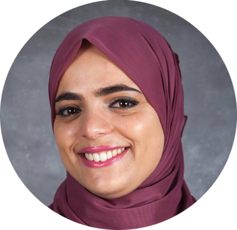
Amal Boukhdir, MSc graduated with a licence in computer science from École nationale des sciences de l'informatique (ENSI) in 2012. She completed her Master in the same field at Institut supérieur de gestion (ISG), Tunisia in 2014. After one year, she started a PhD in computer science at the département d’informatique et recherche opérationnelle (DIRO) at Université de Montréal under the supervision of Prof. Max Mignotte and Dr. Pierre Bellec. She is currently developing new efficient algorithms for functional brain parcellation that identify the subject specific dynamic parcels using longitudinal acquisitions of functional MRI.
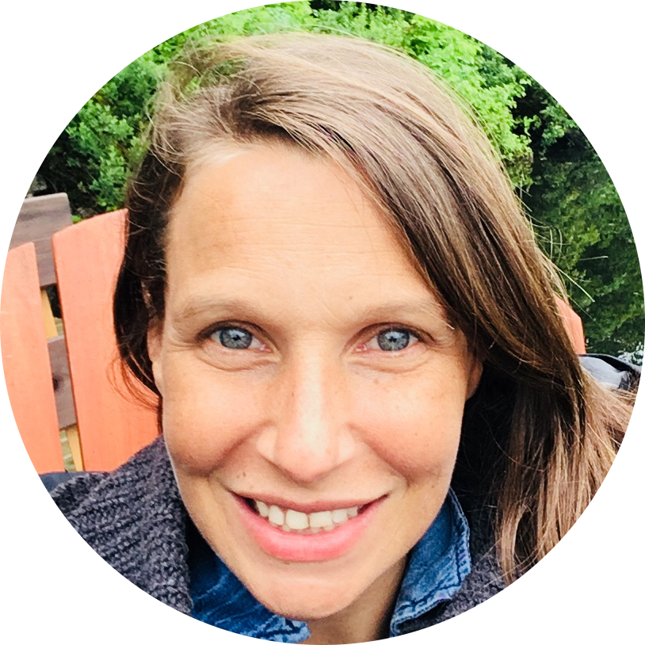
Julie Boyle, MSc, is the Project Manager for the NeuroMod project. She has over 15 years of experience in managing neuroimaging project, in both academia and industry, and has collaborated with labs around the world. After working as a scientific consultant, she has recently joined the SIMEXP lab to explore her interest in using fMRI data to help train artificial neural networks.
Yannik Collin-Verreault, BSc, graduated with a bachelor degree in Neuroscience from Université de Montréal in 2017. He is now a bachelor student in Software Engineering at École Polytechnique de Montréal while doing summer internships at the SIMEXP lab. In summer 2017, his work involved the assessment of the longitudinal consistency of resting-state fMRI multisite data acquired using the harmonized Canadian Dementia Imaging Protocol (CDIP). He is now working on the implementation of an image distortion correction tool for fMRI preprocessing.
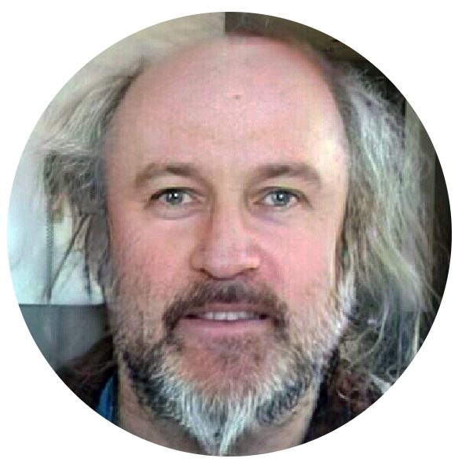
Phil Dickinson, PhD, graduated with a BSc – Biology / Mathematics: Non-linear modelling in physiology of biological systems. He completed his MSc in Psychiatry, using a qualitative neuropsychiatric analysis of functional disorders. He completed his PhD in Neuroscience at McGill University, working with Dr Bellec and Dr Sylvain Baillet. His PhD work involved the study of dynamic functional connectivity of fMRI resting state data in aging, and its relationship with mind wandering and vigilance.
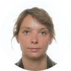
Perrine Ferré, MSc, graduated with a Master in Speech and Language Pathology from the UCLB Lyon 1 in 2006 and from Université de Montréal in 2008. Since then, she has been practicing simultaneously as a clinician SLP and a research professionnal, aiming at knowledge transfer in Dr. Yves Joanette’s lab. Her research interests include communication disorders following right brain damage and inter-hemispheric collaboration. She is now a PhD student in Biomedical Sciences/SLP at the UdeM under the joint supervision of Dr Pierre Bellec and Dr Yves Joanette. The project aims at the exploration of language networks through life course, and the impact of individual factors such as education and life participation on compensatory networks.
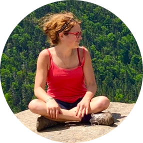
Clara Moreau, MSc, completed a Master’s degree in Cognitive Science at the Descartes University and Ecole Normale Supérieure (Cogmaster), Paris, France. She then worked as a research assistant for an year in the genetic department of Lausanne hospital (CHUV, Dr Sebastien Jacquemont lab ), Switzerland. She is now a PhD student at the Neuroscience program of the University of Montreal, under the joint supervision of Dr Sebastien Jacquemont (Geneticist, Sainte Justine hospital), Dr Pierre Bellec and Dr John D. Lewis (Montreal Neurological Institute, Mc Gill University). Her research project aims to define neurobiologically relevant subtypes of Neurodevelopmental Disorders with a gene-driven approach on neuroimaging and cognitive data. She is using multimodal neuroimaging data for two Autism/Schizophrenia-associated genetic mutations (16p11.2 and 22q11.2), and will then investigate these CNVs-like endophenotypes in independent cohorts with neurodevelopmental disorders.
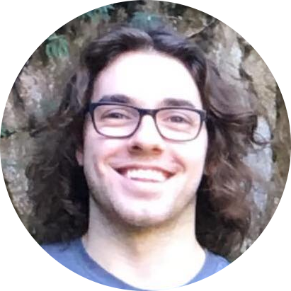
Éloi Prévost is a student at Université de Montréal who is beginning medical school after completing two years as an undergrad student in Neuroscience. He is doing a summer internship at the SIMEXP lab under the co-supervision of Dr Pierre Bellec and Dr AmanPreet Badhwar. His project aims at discriminating patients who suffer from Alzheimer’s dementia from healthy subjects using a predictive model developed in the lab on resting-state fMRI datasets, using data collected by the ADNI and CIMAQ consortia.
Angela Tam, MSc, graduated with a BSc in Psychology at the University of Ottawa. She completed a Master’s degree in Neuroscience at Queen’s University, on age effects on the neural correlates underlying attentional lapses. Now she is a PhD student at McGill University in the Integrated Program in Neuroscience under the supervision of Dr Pierre Bellec and Dr John Breitner. Her PhD project is to investigate the relationship between cortical atrophy, cognitive decline and resting-state connectivity in preclinical and clinical Alzheimer’s disease.
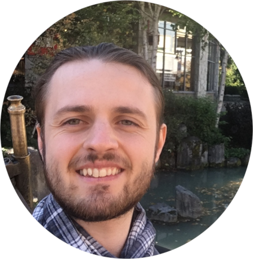
Loïc Tetrel, MSc, is a computer vision scientist specialized in the medical field, graduated with a MEng and MSc in Electrical Engineering at the INSA Lyon (France) and ETS Montréal (Canada) on 3D ultrasound. After working for 2 years on 3D dental scanning technology, he focuses now on deep learning methods for fMRI (preprocessing, feature vizualization of brain states), and scaling them on high performance clusters. Because of his strong interest in open-science, he is also working on a new open-neuroscience publication platform (neurolibre) using binderhub technology.
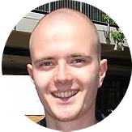
Sebastian Urchs, MSc, completed a Master’s degree in Neuro-Cognitive Psychology at the Ludwig-Maximilians Universität, Munich, in Germany. He then worked as a research assistant in the laboratory of Pr Michael Milham at the Child Mind Insitute of New York, USA. Mr. Urchs is now a PhD student at the integrated program in Neuroscience of McGill University, under the joint supervision of Dr Pierre Bellec and Dr Alan C. Evans. His research project involves the mapping of individual brain networks based on resting-state connectivity and cortical thickness connectivity. These maps will be used to identify subtypes of developmental disorders based on different brain connectivity patterns, using a large imaging database of typically developing children and adolescents as well as children with autism, and children with attention deficit / hyperactivity disorder.
Yu Zhang, PhD, graduated from University of Science and Technology of China in 2009, major in Engineering Automation. Then, she started a Master/PhD program in Neuroimaging analysis at the Brainnetomecenter, Institute of Automation, Chinese Academy of Sciences. After five years of hard work surfing in the brain structure and function, she received the PhD degree in Computational Neuroscience in 2015. Shortly after that, she joined Montreal Neurological Institute, McGill University for a two-year postdoctoral fellowship training under the supervision of Dr. Alain Dagher, working on Parkinson disease and dopamine-related brain networks. She is currently starting a second postdoc at UdeM/CRIUGM under the supervision of Dr. Pierre Bellec, focusing on developing new deep learning methods to associate fluctuations in BOLD brain activity with behaviour, at the level of individual subjects.
Alumni
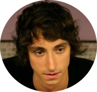
Christian Dansereau, PhD, graduated with a B.Eng. in Electrical Engineering from École de technologies supérieur (ÉTS), Montréal in 2009. He completed a Master degree in Biomedical Engineering at McGill University in collaboration with the Montreal Neurological Institute (MNI). After working as a research assistant at the SIMEXP Lab in 2011, he continued in 2013 as a PhD student at the “département d’informatique et recherche opérationnelle” (DIRO), Université de Montréal, under the supervision of Dr Bellec. His PhD work, which he defended in 2017, was on the development of new methods to identify biomarkers for Alzheimer’s disease prognosis, robust to the clinical and imaging heterogeneity found in multi-centric resting-state fMRI datasets. In 2018, he co-founded perceiv.ai, a start-up company on AI and neuroimaging for precision diagnosis, and still works part-time as a post-doctoral fellow at SIMEXP.
Pierre Orban, PhD, received his LSc (equivalent MSc) in Psychology from the University of Liege, Belgium in 2004. During his cursus, he spent a year at the University of Cardiff, UK working on the hippocampal function in rodents. He completed in 2010 a PhD in Psychology under the joint supervision of Drs Peigneux and Maquet at the Cyclotron Research Center, University of Liege and Dr Doyon at the University of Montreal. His research focused on the neural correlates of declarative and procedural memory processes during wakefulness and sleep in humans. From 2012-2015, he was a postdoctoral fellow holding a Michael Smith CIHR fellowship in the labs of Drs Stip and Bellec, studying cerebral functional connectivity mechanisms in health and schizophrenia using fMRI. In 2015-2016, he did a second post-doctoral fellowship with Dr Bellec and Dr Breitner at the preventAD centre, looking at subtypes of network functional connectivity in preclinical Alzheimer's disease. Since 2016, he is a principal investigator at "Institut en Santé Mentale de Montréal", and an assistant professor at the psychiatry department of Université de Montréal.
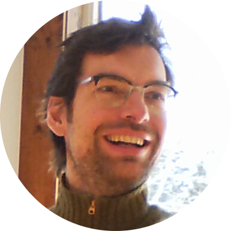
Pierre-Olivier Quirion, PhD, completed his doctoral work in Astrophysics in 2006 under Prof. Gilles Fontaine at Université de Montréal. He then went on a postdoc journey, first with Prof. J-C Dalsgaard at Aarhus Universitet in Danmark and at the Canadian Space Agency’s quiet suburb headquarter on the south shore of Montréal, under Dr. Jean Dupuis. In all, he spent about ten years studying the evolution and seismology of white dwarfs and solar like stars. He followed this period with a two years stint in the film industry, working has a Technical Director in the dynamic CGI production environment in downtown Montréal. It is with this eclectic background, always lined with high performance computing, that Dr Quirion joined the SIMEXP lab for two years (2016-18) as a research professional. There, he developed software for MRI image analysis and distributed computing both on bare metal clusters and with the CBRAIN portal. Since early 2018, he joined Compute Canada and Genome Québec, where he keeps working on scientific workflows for high performance computing.
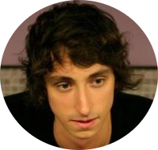
Christian Dansereau, PhD, graduated with a B.Eng. in Electrical Engineering from École de technologies supérieur (ÉTS), Montréal in 2009. He completed a Master degree in Biomedical Engineering at McGill University in collaboration with the Montreal Neurological Institute (MNI). After working as a research assistant at the SIMEXP Lab in 2011, he continued in 2013 as a PhD student at the “département d’informatique et recherche opérationnelle” (DIRO), Université de Montréal, under the supervision of Dr Bellec. His PhD work, which he defended in 2017, was on the development of new methods to identify biomarkers for Alzheimer’s disease prognosis, robust to the clinical and imaging heterogeneity found in multi-centric resting-state fMRI datasets. In 2018, he co-founded perceiv.ai, a start-up company on AI and neuroimaging for precision diagnosis, and still works part-time as a post-doctoral fellow at SIMEXP.
Pierre Orban, PhD, received his LSc (equivalent MSc) in Psychology from the University of Liege, Belgium in 2004. During his cursus, he spent a year at the University of Cardiff, UK working on the hippocampal function in rodents. He completed in 2010 a PhD in Psychology under the joint supervision of Drs Peigneux and Maquet at the Cyclotron Research Center, University of Liege and Dr Doyon at the University of Montreal. His research focused on the neural correlates of declarative and procedural memory processes during wakefulness and sleep in humans. From 2012-2015, he was a postdoctoral fellow holding a Michael Smith CIHR fellowship in the labs of Drs Stip and Bellec, studying cerebral functional connectivity mechanisms in health and schizophrenia using fMRI. In 2015-2016, he did a second post-doctoral fellowship with Dr Bellec and Dr Breitner at the preventAD centre, looking at subtypes of network functional connectivity in preclinical Alzheimer's disease. Since 2016, he is a principal investigator at "Institut en Santé Mentale de Montréal", and an assistant professor at the psychiatry department of Université de Montréal.
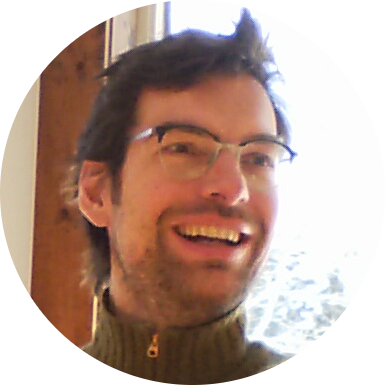
Pierre-Olivier Quirion, PhD, completed his doctoral work in Astrophysics in 2006 under Prof. Gilles Fontaine at Université de Montréal. He then went on a postdoc journey, first with Prof. J-C Dalsgaard at Aarhus Universitet in Danmark and at the Canadian Space Agency’s quiet suburb headquarter on the south shore of Montréal, under Dr. Jean Dupuis. In all, he spent about ten years studying the evolution and seismology of white dwarfs and solar like stars. He followed this period with a two years stint in the film industry, working has a Technical Director in the dynamic CGI production environment in downtown Montréal. It is with this eclectic background, always lined with high performance computing, that Dr Quirion joined the SIMEXP lab for two years (2016-18) as a research professional. There, he developed software for MRI image analysis and distributed computing both on bare metal clusters and with the CBRAIN portal. Since early 2018, he joined Compute Canada and Genome Québec, where he keeps working on scientific workflows for high performance computing.